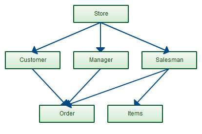
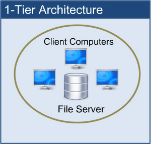
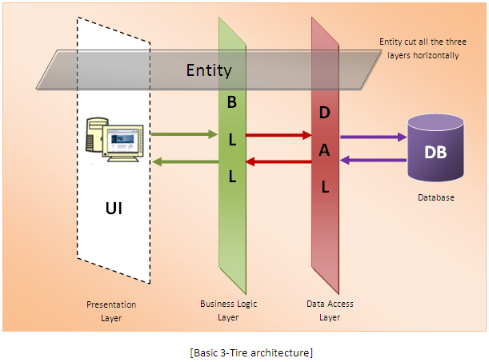

DATABASES
Created by Zykau Siarhei
Content
- What is a database?
- Database and Database management system (DBMS).
- DBMS classification according to data models.
- DBMS Architecture.
- Most popular DBMS.
What is a database?
Main problems to store data:
- Size
- Updating our data
- Accuracy
- Security
- Redundancy
- Importance

Database & DBMS
Database !== DBMS
The database is an organized data structure, it is the data itself.
The DBMS essentially serves as an interface between the database and users or application programs, ensuring that data is consistently organized and remains easily accessible.
The DBMS manages three things
- The data
- The database engine
- The database schema
DBMS classification
There are four kinds of DBMS according to data models
- Hierarchal DBMS
- Network DBMS
- Relational DBMS
- Object Oriented DBMS
Hierarchal DBMS
This database model organises data into a tree-like-structure, with a single root, to which all the other data is linked.

Advantages:
- Hierarchical Model is simple to construct and operate.
- Corresponds to a number of natural hierarchically organized domains.
- Language is simple.
Disadvantages:
- Navigational and procedural nature of processing.
- Database is visualized as a linear arrangement of records.
- Little scope for 'query optimization'.
Network DBMS
This is an extension of the Hierarchical model. In this model data is organised more like a graph, and are allowed to have more than one parent node.
Advantages:
- Conceptual simplicity.
- Capability to handle
more relationship types. - Ease of data access.
Disadvantages:
- Data integrity.
- Data independence.
- Database standards.
Relational DBMS
In this model, data is organised in two-dimensional tables and the relationship is maintained by storing a common field.

Advantages:
- Data base queries are based on a comparison of the table contents.
- The tables are independent and not related by pointers.
- The tables can be easily expanded.
- It is easy to create user specific views.
Disadvantages:
- Slower access rates.
- Access to spatial data by geometric attributes is not optional.
Object Oriented DBMS
An object-oriented database management system is a DBMS where data is represented in the form of objects, as used in object-oriented programming
Advantages:
- Allows the real world to be modeled more closely.
- It new data types to be built from existing types.
- Schema evolution more reasible.
Disadvantages:
- There is a general lack of standards of OODBMS.
- Query optimization requires.
DBMS Architecture
The design of a DBMS depends on its architecture. The architecture of a DBMS can be seen as either single tier or multi-tier.
The tiers are classified as follows:
- 1-tier architecture
- 2-tier architecture
- 3-tier architecture
1-tier DBMS architecture.
This is when the database is directly available to the user for using it to store data. Generally such a setup is used for local application development, where programmers communicate directly with the database for quick response.
2-tier DBMS architecture.
2-tier DBMS architecture includes an Application layer between the user and the DBMS, which is responsible to communicate the user's request to the database management system and then send the response from the DBMS to the user.

3-tier DBMS architecture.
A 3-tier architecture separates its tiers from each other based on the complexity of the users and how they use the data present in the database. It is the most widely used architecture to design a DBMS.
3-tier architecture includes:
- Database(Data) Tier − At this tier, the database resides along with its query processing languages.
- Application(Middle) Tier − At this tier reside the application server and the programs that access the database. The application layer sits in the middle and acts as a mediator between the end-user and the database.
- User(Presentation) Tier − Users operate on this tier and they know nothing about any existence of the database beyond this layer.
Most popular DBMS